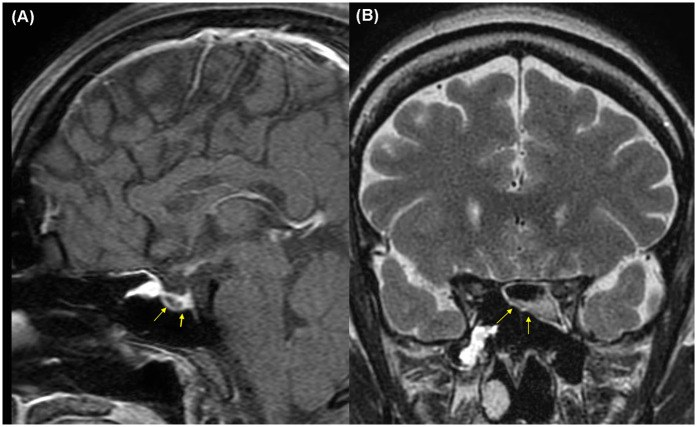
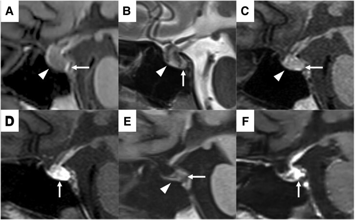
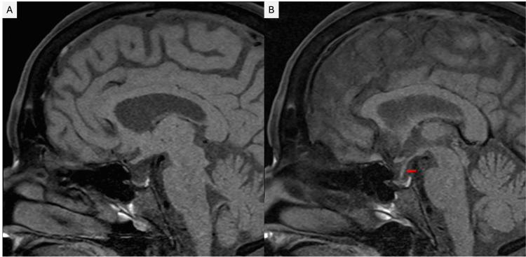

246 — Hội chứng Sheehan (hoại tử tuyến yên sau sinh) & suy tuyến yên mạn / Sheehan syndrome & chronic hypopituitarism
Tags: pattern:hoai-tu-tuyen-yen pattern:hoi-yen-trong pattern:suy-tuyen-yen-man vung:giao-thoa protocol:MRI-yen protocol:xet-nghiem-noi-tiet
Mức chắc chắn (certainty): tổng hợp y văn (literature synthesis) — số liệu từ các bài toàn văn mở (PMC12515800, PMC12246542, PMC12228954, PMC12819307, PMC12467402, PMC13163492); ba ca trong quiz là ca nguyên văn, giữ đúng tuổi – bối cảnh – mô tả hình ảnh gốc.
Câu chốt: sau băng huyết sau sinh / choáng mất máu, người bệnh không lên sữa, mất kinh, mệt lả, hạ natri máu → nghĩ Sheehan dù MRI có thể chỉ là hố yên trống. Hydrocortisone trước levothyroxine; không chờ đủ xét nghiệm hormone mới điều trị cơn suy thượng thận cấp.
1. Tổng quan bệnh học – cơ chế hình ảnh (TẠI SAO)
- Định nghĩa: hội chứng Sheehan (Sheehan syndrome, SS) là hoại tử thiếu máu tuyến yên trước sau băng huyết sau sinh (postpartum hemorrhage, PPH) và/hoặc choáng giảm thể tích, dẫn tới thiếu hụt một hoặc nhiều hormone tuyến yên. Sheehan mô tả lần đầu năm 1937 trên tử thi các sản phụ tử vong vì PPH nặng.
- Tại sao tuyến yên dễ thiếu máu khi sinh: tuyến yên to ra tới 136% thể tích bình thường trong thai kỳ do estrogen (PMC12515800), nhưng nguồn máu chủ yếu là hệ cửa áp lực thấp và không tự điều hòa được; khi huyết áp tụt, lưu lượng qua hệ cửa giảm trước tiên. Các yếu tố cộng thêm: đông máu nội mạch rải rác (DIC), co thắt động mạch, hố yên nhỏ, huyết khối, tiền sản giật.
- Tần suất: ước tính tới 5 ca/100.000 ca sinh sống (PMC12228954); đã giảm mạnh ở nước có chăm sóc sản khoa tốt nhưng vẫn là nguyên nhân suy tuyến yên hay gặp ở nơi nguồn lực hạn chế (PMC12819307). Chẩn đoán muộn rất thường gặp: trung bình 9 ± 9,7 năm trong một cohort Pháp; 20,37 ± 8,34 năm trong cohort Thổ Nhĩ Kỳ 124 bệnh nhân; ca muộn nhất ghi nhận 46 năm (PMC12228954).
- Thiếu hormone nào trước: GH và prolactin giảm ở 90–100%; gonadotropin, TSH, ACTH giảm ở 50–100% (PMC12228954). Vì vậy vô sữa/mất kinh thường là dấu sớm; suy giáp và suy thượng thận xuất hiện muộn hơn.
- Tại sao hạ natri máu: cortisol thấp làm giảm đáp ứng mạch với catecholamine và tăng tiết ADH; đồng thời suy giáp làm chậm thải nước. Hạ natri gặp ở 33–69% bệnh nhân Sheehan (PMC12228954). Ca nguyên văn PMC12246542 còn cho thấy ADH dao động ba pha (đái tháo nhạt → SIADH → đái tháo nhạt trung ương), nên hạ natri không chỉ do thiếu cortisol.
- Thiếu máu: thường là thiếu máu đẳng sắc đẳng bào; cohort 65 bệnh nhân ghi nhận 80% có thiếu máu so với 25% nhóm chứng (PMC12228954).
1.1. TẠI SAO MRI thay đổi theo thời gian
- Cấp (vài giờ – vài ngày): phù tế bào/thiếu máu → T1 giảm, T2 tăng, tuyến yên to lan tỏa, mất ranh giới với cuống. Nếu có hoại tử chảy máu, ổ máu bán cấp (methemoglobin) có thể T1 tăng; sau tiêm gadolinium thấy ngấm viền ngoại vi, trung tâm không ngấm — đúng mô tả ca PMC12515800 (Hình 2).
- Bán cấp (1–3 tuần): tuyến xẹp dần; mất “điểm sáng T1” của thùy sau do cạn kiệt hạt bài tiết AVP trong bào tương tế bào thần kinh (PMC12246542, ngày 12). Điểm sáng T1 bình thường của thùy sau chính là các hạt neurosecretory chứa vasopressin — mất điểm sáng là dấu suy thùy sau, không phải dấu đặc hiệu của Sheehan.
- Mạn (> 3 tháng – nhiều năm): tuyến teo → hố yên trống (empty sella); dịch não tủy (DNT) lấp hố yên: T1 tối, T2 sáng, tuyến bị dẹt sát sàn yên. Ca PMC12515800 có hố yên trống một phần sau 31 tháng; ca PMC12228954 có hố yên trống 46 năm sau PPH.
- Ngưỡng hình ảnh: tuyến yên nữ trưởng thành bình thường cao ≤ 8 mm (khi mang thai có thể tăng thêm); hố yên trống khi DNT chiếm > 50% thể tích hố yên, tuyến bị dẹt sát sàn yên. MRI bình thường không loại trừ suy tuyến yên — chẩn đoán vẫn dựa vào hormone và bối cảnh sản khoa.

Ca 1 (32 tuổi, PPH ~20 L, ngưng tim): (A) T1 sagittal — tuyến yên tín hiệu thấp lan tỏa, có ổ tăng tín hiệu nhỏ (mũi tên vàng); (B) T2 coronal — tuyến yên tín hiệu thấp không đồng nhất. Sau gadolinium: ngấm viền ngoại vi, trung tâm không ngấm. Nguồn: Jeon C et al., Front Surg 2025 (PMC12515800), Fig. 2, CC BY 4.0.2. Mẫu hình + chẩn đoán phân biệt theo vị trí & bối cảnh (Gamut)
- Theo mẫu hình vùng yên:
- Tuyến yên to cấp sau sinh: Sheehan cấp · viêm tuyến yên lympho bào (lymphocytic hypophysitis) · đột quỵ tuyến yên trên u tuyến yên · u tuyến yên · di căn · nhiễm trùng.
- Hố yên trống: Sheehan mạn · hố yên trống nguyên phát · sau mổ/xạ tuyến yên · viêm tuyến yên “cháy hết” · hội chứng Sheehan thể muộn.
- Khối vùng yên kèm suy hormone: macroadenoma · craniopharyngioma · nang Rathke · u màng não củ yên · germinoma · lymphoma.
- Theo cơ chế: thiếu máu/hoại tử (Sheehan, đột quỵ tuyến yên, sau xạ) · viêm tự miễn (lymphocytic hypophysitis, IgG4, thuốc ức chế miễn dịch) · chèn ép (u, nang, phình mạch) · thâm nhiễm (sarcoidosis, histiocytosis, lymphoma, di căn).
- Mnemonic “SHEEHAN”: Shock/PPH · Hemorrhage · Empty sella · Endocrine deficiency · Hyponatremia · Agalactia · No mass (không có khối u rõ).
- Dấu hiệu vàng lâm sàng: vô sữa sau sinh (thường sớm nhất) + mất kinh + mất lông mu/nách + suy giáp + hạ natri + tiền sử PPH/choáng. Không có khối u trên MRI càng ủng hộ Sheehan.
3. Bảng so sánh phân biệt (ma trận đối chiếu)
| Thực thể (entity) | Hình ảnh điển hình (MRI/CT) | Chốt vào (rule-in) | Chốt loại (rule-out) | Gợi ý xác nhận |
|---|---|---|---|---|
| Sheehan cấp | Tuyến yên to lan tỏa, T1 giảm/T2 tăng, có thể ổ T1 tăng do máu; ngấm viền ngoại vi, trung tâm không ngấm | PPH/choáng + vô sữa + hạ Na + tuyến yên to không có khối u; MRI ngày 6–12 sau sinh | Khối đặc có bờ rõ, ngấm đồng nhất, xâm lấn xoang hang → nghĩ u | MRI tuyến yên 2–3 mm; cortisol/ACTH, FT4/TSH, prolactin, Na |
| Sheehan mạn | Hố yên trống, tuyến dẹt sát sàn, cuống kéo xuống; T1 tối/T2 sáng | Tiền sử PPH + thiếu nhiều trục hormone + hố yên trống; không có khối | Có khối ngấm thuốc/xâm lấn → u hoặc viêm hoạt động | Nội tiết đầy đủ; MRI lặp; mật độ xương |
| Viêm tuyến yên lympho bào | Tuyến yên to đối xứng, cuống dày, ngấm mạnh đồng nhất; có thể mất điểm sáng T1 thùy sau | Thai kỳ/hậu sản + đau đầu + suy nhiều trục + đái tháo nhạt; cuống dày, ngấm mạnh | Không có cuống dày, có ổ máu/hoại tử rõ → Sheehan/đột quỵ | Gutenberg score; Wright score ≥ 3 (AUC 0,96; Se 100%, Sp 75%) (PMC13163492) |
| Đột quỵ tuyến yên | Khối yên T1 sáng (máu bán cấp), mức dịch–dịch, blooming SWI; đau đầu dữ | Đau đầu đột ngột + sụp thị trường/liệt vận nhãn + T1 sáng trong khối | Tuyến teo đều, không ổ máu, khởi phát từ từ → Sheehan mạn | MRI + SWI; cortisol; mổ nếu chèn ép |
| Macroadenoma | Khối đặc từ yên, T1 đồng tín hiệu, ngấm đồng nhất, có thể xâm lấn xoang hang (Knosp) | Bán manh thái dương tiến triển + hội chứng tăng tiết; khối bờ rõ | Tuyến dẹt/hố yên trống, không khối → Sheehan | MRI + nội tiết; prolactin, IGF-1 |
| Hố yên trống nguyên phát | Hố yên rộng, DNT lấp, tuyến dẹt; không có tiền sử PPH | Tình cờ, hormone bình thường hoặc thiếu nhẹ; không bối cảnh sản khoa | Thiếu nhiều trục cấp sau PPH → Sheehan | Nội tiết; theo dõi |
4. Protocol chụp + xét nghiệm + xử trí
4.1. Hình ảnh
- MRI tuyến yên chuyên biệt: lát mỏng 2–3 mm, T1 không cản quang, T2, T1 sau gadolinium (động học nếu nghi u), DWI, SWI/T2*; đánh giá chiều cao tuyến, cuống, thùy sau (điểm sáng T1), xoang hang, giao thoa thị.
- CT sọ chỉ để loại trừ chảy máu nội sọ/SAH hoặc khi chống chỉ định MRI; CT không đủ để chẩn đoán Sheehan.
- Siêu âm không có vai trò trong đánh giá tuyến yên người lớn.
4.2. Xét nghiệm (lấy trước khi bù hormone nếu không làm chậm điều trị)
- Cortisol 8 giờ + ACTH, FT4 + TSH, prolactin, LH/FSH + estradiol (nữ) hoặc testosterone (nam), IGF-1, Na, K, glucose, CBC.
- Đánh giá thùy sau: nếu đa niệu/khát nhiều → osmolality máu/nước tiểu, test nhịn nước có kiểm soát; không tự ý dùng DDAVP khi chưa rõ.
- Không dùng test kích thích tuyến yên khi đang có suy thượng thận cấp/chưa bù cortisol.
4.3. Điều trị cấp & mạn
- Cơn suy thượng thận cấp: hydrocortisone 100 mg tiêm tĩnh mạch, sau đó 50 mg mỗi 6 giờ (hoặc truyền 2–4 mg/giờ); bù dịch tinh thể; tìm và xử trí nguyên nhân (nhiễm trùng, mất máu).
- Hạ natri: xử trí theo thể tích và nguyên nhân; không hiệu chỉnh quá nhanh (nguyên tắc chung ≤ 8–10 mmol/L/24 giờ) để tránh hội chứng hủy myelin thẩm thấu. Ca PMC12246542 có Na 153 → 117 → 115 → 138 mmol/L trong 12 ngày, cho thấy cần theo dõi sát cả SIADH và đái tháo nhạt.
- Levothyroxine: chỉ bắt đầu sau khi cortisol đã được bù; khởi đầu thấp (25–50 µg/ngày) ở người già/bệnh tim, tăng dần tới liều thay thế đầy đủ (~1,6 µg/kg/ngày ở người trẻ). Bắt đầu giáp trước corticoid có thể gây cơn suy thượng thận cấp.
- Hormone sinh dục: estrogen ± progesterone cho nữ tiền mãn kinh nếu không có chống chỉ định; không dùng để điều trị vô sinh khi chưa ổn định các trục khác.
- GH: cân nhắc ở người lớn có thiếu GH xác định và chất lượng sống kém; không thường quy ở mọi bệnh nhân.
- Prolactin thấp: không có liệu pháp thay thế; không dùng dopamine agonist.
- Theo dõi: nội tiết 3–6 tháng/lần trong năm đầu, sau đó hằng năm; MRI lặp 3–6 tháng nếu giai đoạn cấp để xác nhận teo/hố yên trống; mật độ xương, lipid, glucose, huyết áp.
flowchart TD
A[Nghi Sheehan sau băng huyết hoặc choáng] --> B[Cortisol 8h, ACTH, FT4, TSH, prolactin, Na]
B --> C{Tụt huyết áp, hạ Na, nghi suy thượng thận?}
C -->|Có| D[Hydrocortisone 100 mg IV rồi 50 mg mỗi 6 giờ]
C -->|Không| E[MRI tuyến yên 2-3 mm]
D --> E
E --> F{Tuyến yên to, phù, ổ máu, ngấm viền?}
F -->|Có| G[Sheehan cấp hoặc đột quỵ tuyến yên]
F -->|Không| H[Sheehan mạn hoặc hố yên trống]
G --> I[Bù cortisol trước, sau đó levothyroxine]
H --> I
I --> J[Theo dõi nội tiết và MRI]
4.4. Khi nào cần hội chẩn ngoại thần kinh
- Không mổ cho Sheehan đơn thuần.
- Hội chẩn khi chẩn đoán không chắc (khối yên không điển hình, nghi u/viêm), chèn ép giao thoa thị tiến triển, hoặc đột quỵ tuyến yên có chỉ định giải ép (xem bài 245).
5. Biến thể bình thường và cạm bẫy
- Tuyến yên to trong thai kỳ là sinh lý — đừng chẩn đoán macroadenoma chỉ vì tuyến cao hơn bình thường; so với MRI trước mang thai nếu có.
- “Điểm sáng T1 thùy sau” có thể mất ở người già, sau xạ, hoặc trong nhiều bệnh lý; mất điểm sáng không đặc hiệu cho Sheehan.
- Hố yên trống có thể tình cờ và hormone bình thường — chỉ chẩn đoán Sheehan khi có bối cảnh PPH + thiếu hormone.
- Hạ natri không chỉ do thiếu cortisol: có thể do SIADH hoặc đái tháo nhạt; điều trị sai hướng (truyền NaCl ưu trương khi đang đái tháo nhạt) có thể nguy hiểm. Theo dõi Na – nước tiểu – cân nặng.
- Không bắt đầu levothyroxine trước hydrocortisone — nguy cơ cơn suy thượng thận cấp.
- MRI bình thường không loại trừ suy tuyến yên; chẩn đoán Sheehan là lâm sàng + hormone + bối cảnh, hình ảnh chỉ hỗ trợ.
- Đừng bỏ qua chẩn đoán muộn: bệnh nhân có thể đến sau nhiều thập kỷ với mệt, hạ Na, thiếu máu; hỏi tiền sử sản khoa là chốt.
- Phân biệt với viêm tuyến yên lympho bào: cuống dày, ngấm mạnh, đái tháo nhạt, liên quan thai kỳ; không có ổ máu/hoại tử; có thể cần sinh thiết nếu không điển hình.
6. Tự lượng giá — Blind Quiz
Ca 1 — 32 tuổi, sau sinh 9 ngày, sốt cao và lú lẫn; tiền sử băng huyết rất nặng.
- Gợi ý: sinh mổ vì ngôi mông, băng huyết ước tính 20 L, ngưng tim 20 phút, cắt tử cung cấp cứu; không lên sữa.
- Câu hỏi: (1) Mô tả tín hiệu tuyến yên? (2) Vì sao tuyến yên dễ tổn thương sau choáng? (3) Ba chẩn đoán phân biệt và bước xử trí đầu tiên?
Bấm để hiện đáp án (findings + chẩn đoán)
- Findings: tuyến yên tín hiệu thấp lan tỏa trên T1 sagittal, có ổ tăng tín hiệu nhỏ trong tuyến; T2 coronal tín hiệu thấp không đồng nhất. Sau gadolinium: ngấm viền ngoại vi, trung tâm không ngấm — phù hợp hoại tử chảy máu tuyến yên trước.
- Chẩn đoán: hội chứng Sheehan cấp sau PPH/choáng; hormone cho thấy suy trục GH, sinh dục và prolactin, còn trục giáp bình thường.
- Vì sao: tuyến yên to do thai kỳ + hệ cửa áp lực thấp + tụt huyết áp → thiếu máu vùng tuyến; hoại tử chảy máu tạo ổ T1 tăng.
- Xử trí: hydrocortisone (ca này dùng dexamethasone 10 mg trước khi có kết quả hormone và cải thiện nhanh), bù dịch, theo dõi Na; sau đó đánh giá và bổ sung hormone theo trục.
- Nguồn ảnh: Jeon C et al., Front Surg 2025 (PMC12515800), Fig. 2, CC BY 4.0. Ca nguyên văn: nữ 32 tuổi, PPH ~20 L, ngưng tim, MRI ngày hậu sản 9.
Ca 2 — 30 tuổi, sau sinh 6 ngày, mất sữa và rối loạn natri máu; MRI được chụp nhiều thời điểm.

- Gợi ý: băng huyết 7 L sau mổ lấy thai; ngày 1 đa niệu, Na 153 mmol/L; ngày 5 Na 117 mmol/L; không lên sữa.
- Câu hỏi: (1) Chuỗi thay đổi hình ảnh từ A đến F nói gì? (2) Vì sao điểm sáng T1 thùy sau mất? (3) Cơ chế hạ natri ở bệnh nhân này?
Bấm để hiện đáp án (findings + chẩn đoán)
- Findings: (A/B) ngày 6: thùy trước to, T1 giảm tín hiệu lan tỏa, T2 tăng không đồng nhất; thùy sau còn điểm sáng T1. (C/D) ngày 12: thùy trước xẹp hơn, mất điểm sáng T1 thùy sau, phần sau thùy trước và toàn thùy sau ngấm thuốc. (E/F) ngày 45: thùy trước teo, thùy sau vẫn mất điểm sáng, ngấm thuốc giảm.
- Chẩn đoán: Sheehan cấp với hoại tử lan tỏa; sau đó suy tuyến yên mạn và đái tháo nhạt trung ương.
- Vì sao mất điểm sáng: điểm sáng T1 của thùy sau do hạt neurosecretory chứa AVP; thiếu máu thùy sau làm cạn hạt → mất tín hiệu T1.
- Cơ chế hạ Na: ban đầu đái tháo nhạt (mất nước, Na cao) → sau đó SIADH do AVP thoát từ thùy sau bị tổn thương → cuối cùng đái tháo nhạt trung ương khi AVP cạn. Vì vậy hạ Na không đáp ứng đủ với hydrocortisone.
- Nguồn ảnh: Minamoto Y et al., JCEM Case Reports 2025 (PMC12246542), Fig. 1, CC BY 4.0. Ca nguyên văn: nữ 30 tuổi, PPH 7 L.
Ca 3 — 89 tuổi, mệt và hạ natri máu; tiền sử băng huyết sau sinh cách đây 46 năm.

- Gợi ý: không dùng thuốc lợi tiểu; cortisol thấp, TSH thấp, không có khối yên trên MRI.
- Câu hỏi: (1) Dấu hiệu chính? (2) Vì sao chẩn đoán muộn đến vậy? (3) Điều trị và theo dõi?
Bấm để hiện đáp án (findings + chẩn đoán)
- Findings: (A) hố yên trống một phần, DNT lấp phần lớn hố yên, tuyến yên dẹt sát sàn; (B) cuống tuyến yên kéo xuống sát sàn (mũi tên đỏ).
- Chẩn đoán: Sheehan mạn với hố yên trống và suy tuyến yên; chẩn đoán muộn 46 năm sau PPH.
- Vì sao muộn: triệu chứng mơ hồ (mệt, hạ Na, thiếu máu) bị quy cho tuổi già; mất kinh/vô sữa không được chú ý vì PPH xảy ra gần tuổi mãn kinh.
- Điều trị: hydrocortisone trước, sau đó levothyroxine; theo dõi Na, cortisol, FT4, mật độ xương; giáo dục bệnh nhân mang thẻ cảnh báo suy thượng thận và tăng liều khi stress.
- Nguồn ảnh: Samman BS et al., Cureus 2025 (PMC12228954), Fig. 1, CC BY 4.0. Ca nguyên văn: nữ 89 tuổi, PPH 46 năm trước.
Bài liên quan chéo
- 245 – U tuyến yên chảy máu/nhồi máu (pituitary apoplexy)
- 247 – Bóc tách động mạch cổ/đốt sống
- 432 – Vùng yên: adenoma vs đột quỵ tuyến yên
- 200 – Tổng quan hệ Thần kinh
- 560 – Nhau cài răng lược/PAS cấp cứu sản khoa
Không dùng để chẩn đoán độc lập khi chưa có người hướng dẫn.